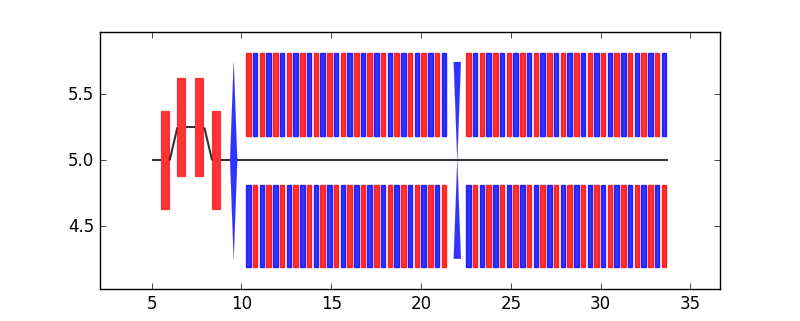

Example 1¶
Use deprecated modules from beamline package:
blparser, elements and pltutils to do
simple lattice visualization task.
Below is the lattice definition file (ele.list)to be used:
# lattice file for demostrations
D1: drift, l = 0.5
B1: rbend, l = 0.5, angle = 30
D2: drift, l = 1
B2: rbend, l = 0.5, angle = -30
D3: drift, l = 1
B3: rbend, l = 0.5, angle = -30
D4: drift, l = 1
B4: rbend, l = 0.5, angle = 30
D5: drift, l = 1
Q1: quad, k1= 20, l = 0.4, angle = 75
Q2: quad, k1=-20, l = 0.4, angle = 75
Q3: quad, k1= 20, l = 0.4, angle = 75
Q4: quad, k1=-20, l = 0.4, angle = 75
U1: undulator, xlamd = 0.5, nwig = 15
BL: line = (D1, B1, D1, B2, D1, B3, D1, B4, D1, Q1, D1, U1, D1, Q2, D1, U1)
BL2: line = (D1,D2,Q1,D1,B1,D2,B2,D3,U1,Q2,D3,B3,D4,B4,D5,Q1,U1,D1,D2,D3,Q1,D1,B1,D2,B2,D3,Q2,D3,B3,D4,B4,D5,Q1,D2,D2,Q3,D2,D2,Q4,D2,D2,Q2,D3,B3,D4,B4,D5,Q1,D2,D2,Q3,D2,D2,Q4,D2,D2,Q2,D3,B3,D4,B4,D5,Q1,D2,D2,Q3,D2,D2,Q4,D2,D2)
BL3: line = (B1,D2,B2,D3,B3,D4,B4,D5,U1)
Warning
Note that this module only support beamline definition with all elements on the same line. To be more flexible, use the new parsing modules.
Now visualization beamline named BL could be achieved by
following steps:
1 2 3 4 5 | from beamline import blparser
from beamline import pltutils
beamlinelist = blparser.madParser('ele.list', 'BL')
beamlineplot, xlim, ylim = pltutils.makeBeamline(beamlinelist, startpoint=(5, 5))
pltutils.plotLattice(beamlineplot, xranges=xlim, yranges=ylim, zoomfac=1.2, fig_size=8, fig_ratio=0.4)
|
Which should show figure like:
{kind=link}
And if choosing BL2, should get figure like: